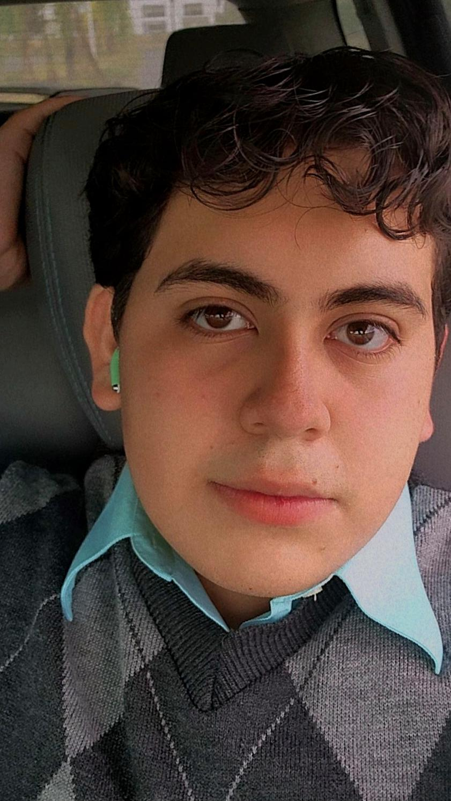

Ingeniería en Tecnologías de la Información · Aspirante a UX Designer

Soy estudiante de octavo cuatrimestre en la UPV, apasionado por el diseño de experiencias de usuario, la inteligencia artificial y la sostenibilidad. Actualmente curso el Certificado Profesional de Google UX Design en Coursera, donde he aprendido a realizar investigación de usuarios, crear wireframes, prototipos de alta fidelidad y pruebas de usabilidad.
Participación en el Torneo Mexicano de Robótica (TMR) 2023.
Segundo lugar en FECIT 2025 con proyecto de biogel para purificación de agua.
SARTET (Inventario) · INAOE (Diseño Digital con CAD).
Proyecto UX que conecta estudiantes con oportunidades ambientales usando IA.
He completado los cursos de fundamentos de UX, investigación, ideación, wireframing, prototipado y testing. Aplico metodologías Design Thinking para crear soluciones centradas en el usuario. Este portafolio muestra dos casos de estudio completos.
Ver certificados